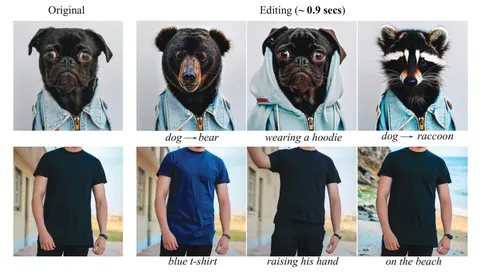

Мы уже рассказывали о восьми статьях, которые Yandex Research представит на конференции NeurIPS. Сегодня подробнее остановимся на одной из них, посвящённой методу инвертируемой дистилляции (Invertible Consistency Distillation, iCD).
Современные модели хороши в генерации изображений, но когда дело касается редактуры — могут возникать проблемы. Основная проблема заключается в необходимости точной инверсии: кодирования изображения в латентное пространство и последующей реконструкции, которая должна сохранить исходные детали и при этом интегрировать текстовые запросы. Существующие методы редактирования требуют больших вычислительных ресурсов и значительного времени — вплоть до 50 и более шагов инференса.
iCD призван решить этот недостаток. Суть метода заключается в создании двунаправленных моделей: одна из них кодирует изображения в латентное пространство, другая — декодирует их обратно. Таким образом, можно довольно быстро отредактировать картинку. Скажем, добавить на фотографию какой-нибудь объект или заменить собаку на медведя или енота.
Чтобы улучшить соответствие между текстовым запросом и сгенерированным изображением используют технику Dynamic Classifier-Free Guidance (Dynamic CFG). На начальных этапах преобразования, когда уровень шума высок, CFG не работает, что способствует разнообразию генераций. На поздних этапах CFG работает, обеспечивая более точное соответствие текстовому промпту.
Благодаря всему этому, редактирование изображения с использованием метода iCD занимает всего 7–8 шагов инференса.
ML Underhood
